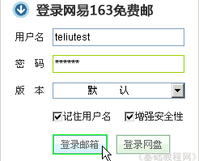

电子邮箱基础入门教程
一、登录邮箱 返回
申请好邮箱以后就可以使用邮箱了，一般是先登录邮箱所在的网站，也就是邮箱地址的后半部分，下面我们来学习登录的操作；
1、登录邮箱网站
1）在浏览器地址栏输入网址：http://mail.163.com，按回车键或者点“转到”就可以进入邮箱首页，找到登录框；
在右边的登录框里，依次输入用户名和密码，用户名是邮箱地址的前半部分，密码显示的是*号；

2）点击“登录邮箱”，然后出来一个登录进度，然后很快进入到自己的邮箱页面；
2、邮箱页面
1）进入邮箱页面以后，最上面显示的是自己的邮箱地址，旁边是“退出”链接，点击可以安全退出；
2）邮箱地址的下面是邮箱菜单，默认打开的是第一项“电子邮件”，其他的一般不太常用；
3）左侧是邮箱文件夹，电子邮箱中一般有收件箱、草稿箱、已发送等等文件夹，用来存放相应的邮件；
收件箱里存放别人发过来的邮件，草稿箱里存放还没发送的邮箱，已发送里保存放发给别人的邮件；
4）黑色粗体表示里面有新邮件，点击一下黑粗体的 收件箱(1)，然后中间的工作区里，出现了收件箱里的邮件列表；
5）在邮件的主题“欢迎您使用网易163邮箱！”上点一下，就可以打开这封邮件；
一般来说小于2k大小的邮件是比较安全的，另外邮件里的链接地址也要特别小心；
6）看完以后，点上面左上角的“返回”按钮，回到收件箱，这时邮件已经变成正常状态，左边的信封图标也消失了；
7）点上边邮箱地址旁边的“退出”链接，安全退出邮箱，返回到登录页面；
本节学习了登录邮箱的基本方法，如果你成功地完成了练习，请继续学习下一课内容；
本教程由86团学校TeliuTe制作|著作权所有
基础教程网：http://teliute.org/
美丽的校园……
转载和引用本站内容，请保留作者和本站链接。